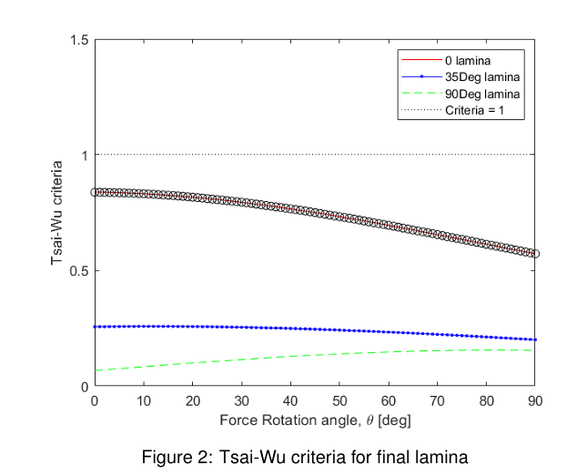

Abstract
This project focuses on the design and optimization of a composite laminate aimed at achieving the minimum possible weight while satisfying specific stiffness and strength criteria. The laminate design process involves determining the number of plies, their orientation angles, and maintaining a uniform fiber volume fraction within a specified range. Utilizing the properties of carbon/epoxy lamina, the design approach unfolds in three stages: (1) optimizing the ABD matrix to meet stiffness constraints, (2) ensuring structural integrity under various loading scenarios by applying the Tsai-Wu failure criterion, and (3) simultaneously addressing both stiffness and strength conditions. The findings underscore the trade-offs between stiffness and strength, illustrating the methodology used to justify the final chosen solution.
Introduction
Composite materials, especially carbon fiber-reinforced polymers, are renowned for their high stiffness-to-weight and strength-to-weight ratios, making them highly suitable for aerospace structural applications. This project, part of Composite Structures and Materials, aims to design the lightest possible laminate that meets a specified set of mechanical performance criteria. The objective of this work is to develop efficient structural solutions that meet the concurrent requirements of stiffness and strength, which are essential characteristics of advanced aerospace components.
The design space encompasses laminates with varying numbers of plies, diverse ply orientations, and a consistent fiber volume fraction ranging from 45 to 65 percent. The project is divided into three distinct phases: the first concentrates exclusively on stiffness, requiring the in-plane (A) and bending (D) matrices to exceed defined threshold values across all orientations. In the second phase, the laminate's capacity to endure complex loading conditions is evaluated using the Tsai-Wu failure criterion. The final phase combines both stiffness and strength criteria.
Stiffness Design
The stiffness design aims to find the lightest laminate that meets the following requirements:
- Axx ≥ 100,000 N/mm in the global x-y reference frame
- Axx ≥ 30,000 N/mm for any rotated x-y frame
- Dxx ≥ 25,000 N·mm
A MATLAB code was built using functions for calculating the stiffness matrix Q and the ABD matrix, and then used to obtain the lamina stacking sequence or layup which satisfied the stiffness design constraint values.
Strength Design
In our pursuit to identify the lightest feasible laminate that can endure all outlined load conditions, we utilized the Tsai-Wu criterion, an interactive failure theory, for failure prediction. The laminate is required to survive the following applied loads:
- Nxx = 600 N/mm
- Nθθ = 200 N/mm
- Mxx = ±100 N

Tsai-Wu criteria for final lamina configuration
Results
Three distinct laminate configurations were investigated during the design process, each tailored to a specific objective: optimizing stiffness, optimizing strength, and creating a combined stiffness-strength solution.
The final laminate [0 0 0 0 35 90 90 90 90]s achieved both stiffness and strength objectives through a symmetric layup with a fiber volume fraction of 40%. This configuration struck an effective balance between mechanical performance and weight efficiency. The values for the stiffness design parameters are:
- Axx = 1.0207 × 10⁵ N/mm in the global x-y reference frame
- min(Axx) = 8.2686 × 10⁴ N/mm for any rotated x-y frame
- Dxx = 5.8612 × 10⁴ N·mm
- Dyy = 1.5187 × 10⁴ N·mm

Tsai-Wu criteria for final combined design — [0 0 0 0 35 90 90 90 90]s
Conclusion
This study effectively presents an optimized approach to designing composite laminates that successfully balance stiffness and strength while minimizing weight. Through a systematic analysis of the ABD matrix and application of the Tsai-Wu failure criterion, three distinct laminate configurations were assessed. The final design not only achieved structural integrity but also enhanced weight efficiency at 27.8604 kg/m², demonstrating that strategic layering and careful material selection are vital. This methodology emphasizes the trade-offs inherent in composite design and provides a solid framework for future advancements in lightweight, high-performance materials.